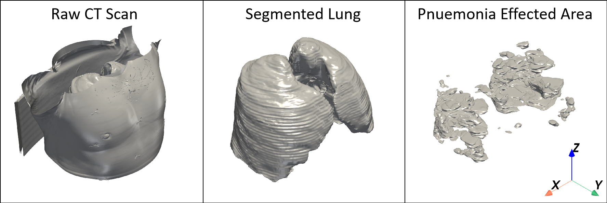
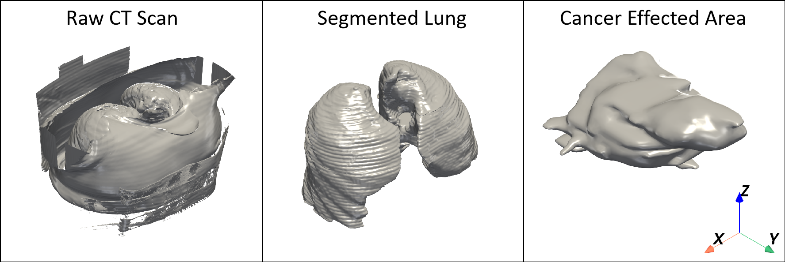
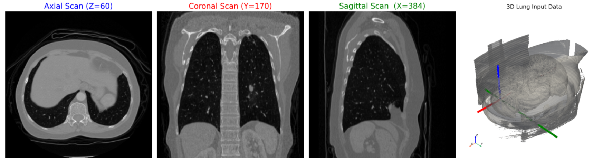
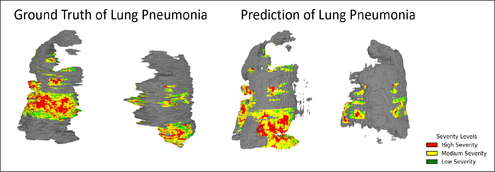
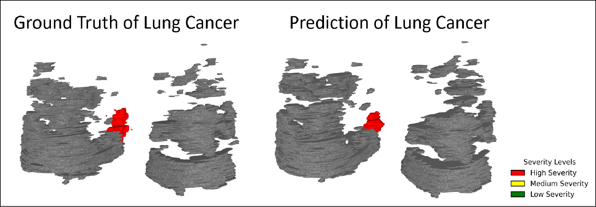
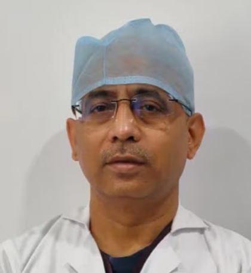

TARU-Net achieves strong performance across both lung cancer and COVID-19 pneumonia datasets:
Accurate segmentation and volume visualization of the lung from computed tomography (CT) images holds the key to precision diagnosis, personalized treatment, and predictive healthcare. Despite the surge of AI-driven medical imaging, existing segmentation pipelines falter in handling inevitable pathological variations, inconsistent CT quality, and the scarcity of well-annotated data, often producing voxelated, unrealistic lung geometries that limit clinical trust.
We present TARU-Net, a unified framework that fuses deep learning-based segmentation with surface topology-guided 3D reconstruction. The architecture captures rich multi-scale spatial features, ensuring resilient performance even in complex pathological landscapes such as fibrosis, tumors, or pneumonia. The subsequent topology-driven reconstruction, implemented via the Marching Cubes algorithm with RBF interpolation and Ball Pivot Algorithm, smoothens jagged voxel artifacts and restores anatomical realism, producing seamless, high-fidelity 3D lung models directly from patient CT data.
TARU-Net integrates three key stages: (1) U-Net-based 2D CT slice segmentation for lung and lesion extraction, (2) 3D surface reconstruction using Marching Cubes followed by RBF interpolation for smooth, gap-free surfaces, and (3) Ball Pivot Algorithm for watertight mesh generation with color-coded severity mapping based on Hounsfield Units.

Raw CT scan (left), extracted lung region (middle), and pneumonia-affected regions (right).

Raw CT scan (left), extracted lung region (middle), and cancer-affected regions (right).

Axial, Coronal, and Sagittal slices with 3D volume overlay showing directional axes.
TARU-Net achieves strong performance across both lung cancer and COVID-19 pneumonia datasets:
| Task | Training Loss | Training Dice | Validation Loss | Validation Dice | Test Loss | Test Dice |
|---|---|---|---|---|---|---|
| Lung Cancer | 0.0012 | 0.5977 | 0.0009 | 0.8769 | 0.0009 | 0.8887 |
| Lung Pneumonia | 0.5309 | 0.6294 | 0.4907 | 0.6252 | 0.4966 | 0.6168 |
Performance comparison for lung cancer segmentation:
| Model | Dice Score | Sensitivity | Specificity | Inference Time (s) |
|---|---|---|---|---|
| UNet++ | 0.9083 | 0.9163 | 0.999995 | 6.36 |
| FPN | 0.8837 | 0.9175 | 0.999993 | 3.43 |
| PSPNet | 0.9001 | 0.9058 | 0.999994 | 2.03 |
| DeepLabV3 | 0.9008 | 0.9235 | 0.999988 | 3.59 |
| SegFormer | 0.8867 | 0.9262 | 0.999974 | 3.71 |
| TARU-Net (Ours) | 0.8887 | 0.9238 | 0.999988 | 3.33 |
While some models achieve marginally higher Dice scores, TARU-Net maintains an optimal balance between accuracy and efficiency with ~3.3s inference time per scan, critical for time-sensitive clinical applications.

Color-coded severity: Red (severe), Yellow (moderate), Green (healthy tissue).

3D reconstructed predictions from TARU-Net for lung cancer cases.
We present a unified computational pipeline that seamlessly integrates 2D deep learning-based segmentation with 3D surface topology-driven reconstruction for volume visualization, generating anatomically faithful, color-coded models of the human lung. By leveraging U-Net's feature-extraction capabilities coupled with topology-based surface reconstruction, TARU-Net achieves high accuracy in delineating lung parenchyma, airways, and pathological regions.
The fusion of deep learning and topology-aware reconstruction transforms discrete CT voxel data into realistic 3D representations with smooth, anatomically consistent surfaces. This hybrid approach surpasses traditional methods in robustness, adaptability to diseased tissues (fibrotic or tumorous lungs), and computational efficiency—offering transformative potential for diagnosis, surgical planning, computational medicine, and medical education.
Beyond immediate utility, this work paves the way for explainable and real-time AI in thoracic imaging, bridging algorithmic precision with clinical interpretability. Future directions include four-dimensional (time-resolved) reconstruction to capture lung deformation during respiration, supported by self-supervised learning, domain adaptation, and federated frameworks for privacy-preserving model training.
Partha Acharya
IIT Kharagpur
Aishik Sen
VIT Chennai

Amitabha Chattopadhyay
Narayana Hospital
Subhamoy Mandal
IIT Kharagpur
Suman Chakraborty
IIT Kharagpur
@article{acharya2026tarunet,
author = {Acharya, Partha and Sulake, Nikhileswara Rao and Sen, Aishik and Chattopadhyay, Amitabha and Mandal, Subhamoy and Chakraborty, Suman},
title = {TARU-Net: Topology-Aware Deep Learning for High-Fidelity Lung CT Segmentation and Volume Visualization},
journal = {Under Review},
year = {2026},
}